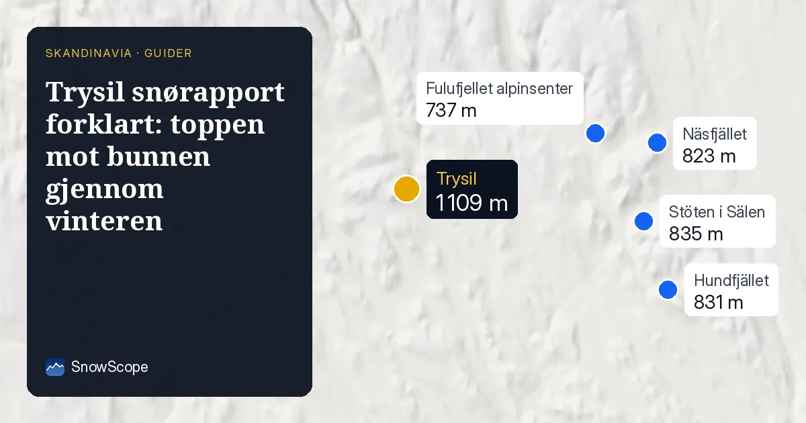

Trysil snørapport forklart: toppen mot bunnen gjennom vinteren
Trysil er Norges største skianlegg målt i kartlagte nedfarter, 101 km på 40 heiser rundt det avrundede Trysilfjellet, fra 407 moh. nederst til 1109 moh. på toppen. Snørapporten har alltid to dybder, og avstanden mellom dem er nøkkelen til å lese den. Her er hva de to tallene vanligvis er, måned for måned, fra vår historikk over 46 tidligere vintre.
Se snøprognosen for Trysil direkte i SnowScope-appenSnødybde, puddervarsler og 3D-kartet, gratis.

To tall, ett fjell
Bunn og topp er skilt av 702 høydemeter, og i et skandinavisk klima er det nok til en reell forskjell. I en vanlig vinter er vintertoppen 80 cm nederst, 103 cm midt på fjellet (758 moh.) og 130 cm på toppen. Når rapporten sier at bunnen er tynn, er øvre halvdel som regel fin.
November og desember: toppen leder
Første snø når midt på fjellet innen 20. oktober i halvparten av vintrene. November er tynn overalt: 7 cm nederst, 17 cm midt på og 26 cm på toppen i et vanlig år.
Desember åpner gapet: 28 cm nede, 44 cm midt på og 60 cm øverst. Kald innlandsluft gjør at det som faller blir liggende, og snøproduksjonen fyller de nedre løypene.
Januar til mars: hele fjellet
I januar har bunnen 52 cm, midten 68 cm og toppen 88 cm. Februar og mars er de dype månedene: 80 og 85 cm midt på, 99 og 107 cm på toppen.
Beste uke midt på fjellet er uke 9, i slutten av februar, da alle tidligere vintre (100 prosent) hadde minst 50 cm der. Midt på fjellet holder det 50 cm eller mer i 12 uker i ni av ti vintre; toppen klarer 15 uker.
April: kjør toppen, gå bunnen
I april har bunnen vanligvis 42 cm igjen og toppen 111 cm. Påskeukene handler om toppen av fjellet.
Måned for måned i tre høyder
I desember har en vanlig vinter 28 cm nederst (407 moh.), 44 cm midt på fjellet (758 moh.) og 60 cm på toppen (1109 moh.). I januar har en vanlig vinter 52 cm nederst (407 moh.), 68 cm midt på fjellet (758 moh.) og 88 cm på toppen (1109 moh.). I februar har en vanlig vinter 65 cm nederst (407 moh.), 80 cm midt på fjellet (758 moh.) og 99 cm på toppen (1109 moh.).
I mars har en vanlig vinter 66 cm nederst (407 moh.), 85 cm midt på fjellet (758 moh.) og 107 cm på toppen (1109 moh.). I april har en vanlig vinter 42 cm nederst (407 moh.), 78 cm midt på fjellet (758 moh.) og 111 cm på toppen (1109 moh.).
En dårlig vinter og en god vinter
Spriket betyr like mye som midten. Midt på fjellet hadde ni av ti tidligere mars-måneder minst 63 cm og én av ti 115 cm eller mer; på toppen går samme sprik fra 76 til 137 cm.
Over hele vinteren gikk toppen midt på fjellet fra 54 cm i den dårligste vinteren til 146 cm i den beste, rundt vanlige 103 cm; på toppen fra 58 til 194 cm rundt 130 cm. Snø dekket bakken midt på fjellet i 200 dager i en vanlig vinter, og første snø la seg der innen 20. oktober i halvparten av vintrene.
Trend over 46 vintre
Toppens vintertopp gikk fra 145 cm i de første 15 vintrene til 135 cm i de siste 15. Bunnen gikk fra 92 til 78 cm. Fjellet leverer fortsatt, med litt mindre nederst; sist vinter toppet midt på fjellet på 93 cm.
Tips til skiløpere
- Les topptallet for skikjøringen, bunntallet for veien hjem.
- Februar og tidlig mars gir dypest snø i alle høyder.
- Dybdene våre er et områdeanslag fra tidligere vintre, ikke anleggets egen måling; åpne heiser står på den offisielle siden.
Referanser og kilder
- Wikipedia, «Trysil», hentet 22 November 2026. no.wikipedia.org/wiki/Trysil
Om tallene
Heiser, bakker og reise: kildene nedenfor, kontrollert på datoen som vises.
Offisielle snøskredvarsler: Varsom (NVE)
Siter denne rapporten
For forskning, undervisning eller presse: tallene og diagrammene kan brukes fritt under CC BY 4.0 med denne kildehenvisningen.
SnowScope (2026), Trysil snørapport forklart: toppen mot bunnen gjennom vinteren, https://snowscope.app/blog/nb/2026/11/trysil-snow-top-vs-bottom-through-the-winter.html, hentet 2026-11-22
SnowScope (Atlas Labs). (2026, November 22). Trysil snørapport forklart: toppen mot bunnen gjennom vinteren. SnowScope snow reports. https://snowscope.app/blog/nb/2026/11/trysil-snow-top-vs-bottom-through-the-winter.html
BibTeX
@misc{snowscope2026trysilsnowtopvsbottomthr,
author = {{SnowScope (Atlas Labs)}},
title = {Trysil snørapport forklart: toppen mot bunnen gjennom vinteren},
year = {2026},
month = nov,
howpublished = {\url{https://snowscope.app/blog/nb/2026/11/trysil-snow-top-vs-bottom-through-the-winter.html}},
note = {Published 2026-11-22 11:12 UTC; accessed 2026-11-22}
}· CC BY 4.0 · Metoder, data og verktøy →
Trysil: snø og temperatur etter høyde, i vinter sammenlignet med i fjor (verktøy) →
Følg Trysil
Gratis: en melding når nysnø er på vei, og prognosen hver morgen.